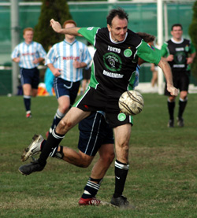

|
YC&AC Sun 13th November. The gap between the Hibs and rest of the field has narrowed in recent weeks. Although not on the table it certainly seems to have narrowed on the field. After a sparkling earl season run of form when 5 goals a game was the norm, the Hibs have scored only 2 goals in their last 200 minutes of football. In truth the YCAC probably deserved all 3 points in this bruising encounter on a bumpy YCAC pitch.
|  |
|
Veteran defender Terry Cooney shields the ball from James Absolom.
|
Right from kick off the Hibs were under pressure as YCAC dominated in most areas. The Hibs spoke before the kickoff about not giving away fouls around the edge of the area because of the danger presented by Damian Hart. However they soon ended up doing the opposite and gave away foul after foul in the Hibs’ own half. Fortunately for them Damian Hart went off injured after only one missed attempt. This saw big Steve McKee add his considerable presence to the fray as the last man available for the YCAC he obviously thought his afternoon of football was over. The YCAC had several chances and only the bar and some quality keeping from Hitoshi – experiencing his busiest day of the season – kept them out. Finally the pressure ended up telling when the YCAC were awarded another needless free kick outside the area on the left. Some YCAC bloke delivered a pin point free kick to the back post, just too far from goal for Hitoshi to claim and the YCAC man of the match - right back Daisuke ghosted in back post a looped a header that wrong footed Hitoshi and went in. The Hibs rear guard defended with their backs against the wall for the remainder of the half and YCAC would have felt disappointed that they were only 1-0 in front at half time. No Hibs member aside from Hitoshi could put their hand up and say they were happy with their first half performance; but there was still 40 minutes of football remaining.
The change in the second half seemed almost immediate as the Hibs began to play some football at last and their tempo lifted looking sharper on and off the ball and holding possession for longer. Naoki then succumbed to concussion that has seen him bed ridden since and the Hibs were also down to a bare 11. The YCAC back 4 continued to repel most of the Hibs attacks including an indirect free kick from 6 yards that Tomo hit well but was saved by the keeper. It remained 1-0 until Yohei beat 2 players on the outside right of the box and the second of those defenders wisely? fouled him. Yohei then whipped in a great free kick - low and hard to the near post and Yama showed true class, timing and bravery by diving in at waist height to hit a thundering header between the keeper and the near post from 6 yards to level at 1-1.
The Hibs then began to push forward in numbers with hopes of an improbable victory and they did have a few chances to get the winner but in the end a 1-1 score line was probably a fair result and if anything a little flattering to the Hibs. YCAC is also a difficult place to leave with points and the Hibs were more than happy to leave the YCAC with their undefeated record in tact.
Report by Bevan Colless
|